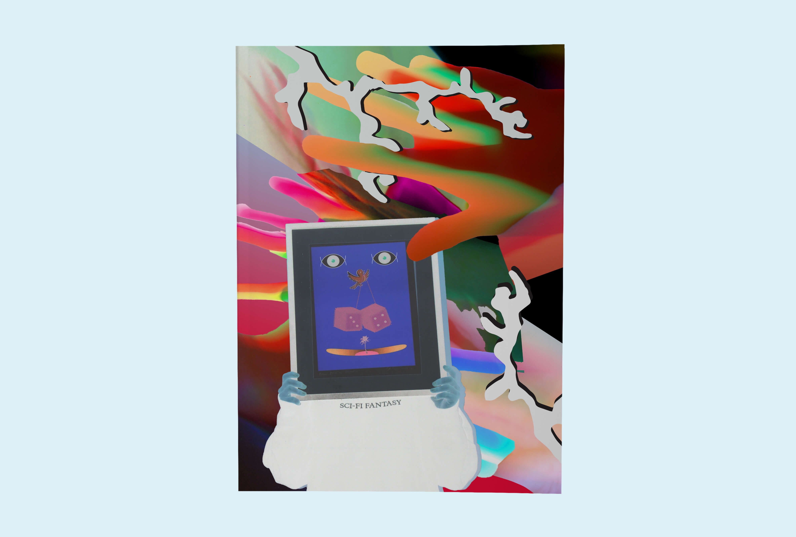
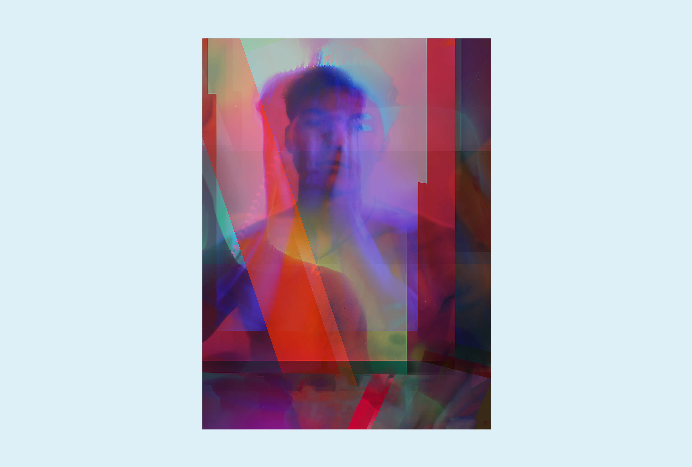

I feel that when it comes to graphic design, to make your work stand out, it is important to experiment with various image-making techniques. I used this project as an opportunity to see how I could use photography to create textures, dimension and depth. The result was three unconventional portraits. I began by playing with lighting, shutter speed and aperture as I capture the subject in motion. I then brought the images into photoshop and lightroom to combine them in a way that was eye-catching and unexpected. I wanted each image to have a different style, yet for them to remain cohesive through the colour scheme.

